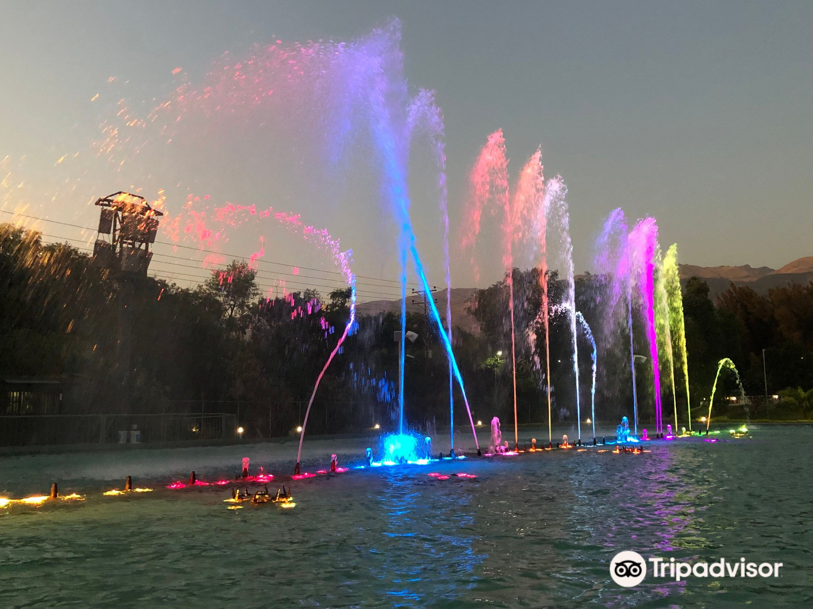
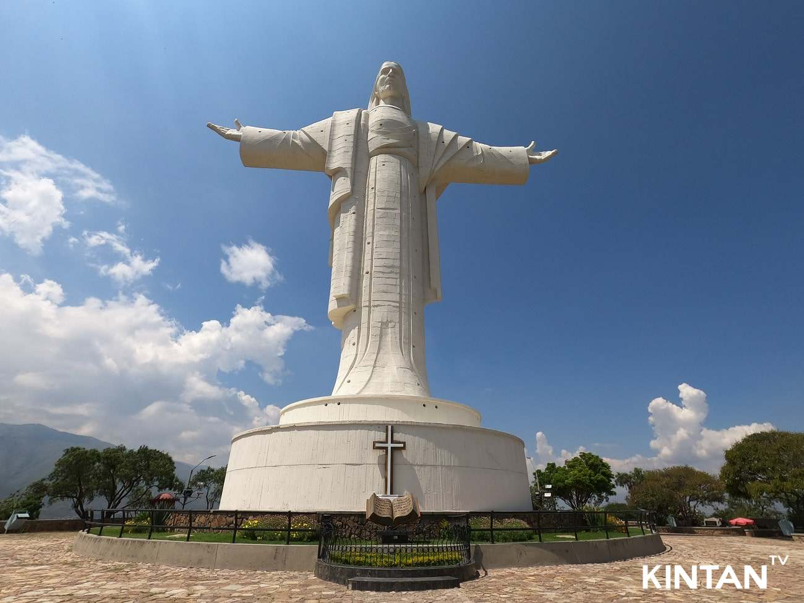
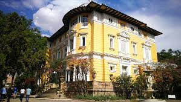
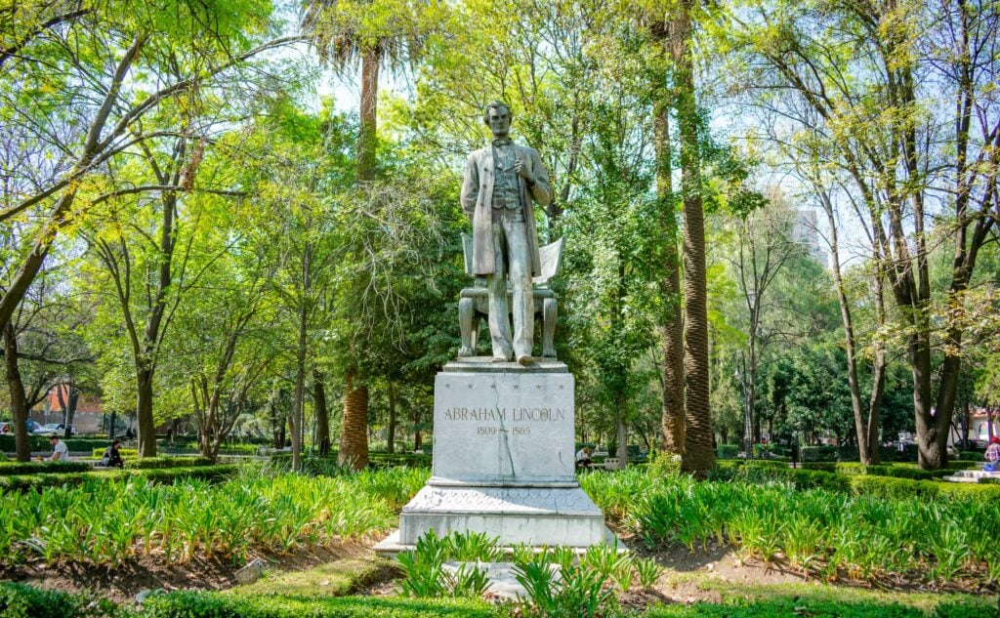
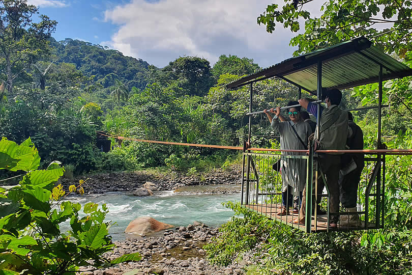

Bienvenido a CochaLove
Descubre las mejores ideas para tener citas en cochabamba, ya sea con tu amig@ o pareja, Estos lugares son los ams recomendados en Cochabamba.
Diferentes actividades, Lugares, etc. Todos estos lugares tienen garatia COCHALOVE. Te garantizamos que la pasaras muy bien.
Sobre Nosotros
CochaLove es una iniciativa creada con el objetivo de promover los mejores lugares para reunirse con amigos y/o pareja en Cochabamba. Pensado para parejas y aventureros que buscan experiencias únicas y memorables. Fundada en 2024, nuestra misión es ser el puente entre los visitantes y los rincones mágicos de Cochabamba, ofreciendo una guía detallada de los mejores lugares para citas y encuentros románticos.
Detrás de CochaLove está un equipo de apasionados por la belleza y el encanto de Cochabamba, comprometidos con compartir el corazón y el alma de nuestra ciudad. Creemos en crear momentos inolvidables, y es nuestra alegría ayudarte a descubrir el lugar perfecto para tu próxima cita.
Descubrelos con nostros!!. Empecemos.
Parque De La Familia
El Parque de la Familia es un espacio turístico, destinado a la orientación alternativa recreacional, Donde se destaca el espectáculo con 5 fuentes de aguas danzantes las cuales se llaman: fuente de la alegría, fuente de los deseos, fuente de la amistad, túnel de la esperanza, fuente principal y ofrece asombrosos espectáculos de luces y proyecciones en el agua en dos funciones, con chorros de hasta 20 metros sincronizados con la música. Si quieres pasar una noche inolvidable, este lugar es perfecto, puedes pedir un deseo en la fuente de los deseos, y pasar una noche muy romantica. Te recomendamos que lo visites por la noche ya que es en la noche donde el espectaculo de luces se aprecia mejor.
Cristo De La Concordia
El Cristo de la Concordia es una estatua monumental de Jesucristo, ubicada sobre el cerro de San Pedro en la ciudad de Cochabamba, Bolivia, a una altura de 265 m sobre la ciudad. La estatua mide 34,20 m de altura, sobre un pedestal de 6,24 m, con una altura total de 40,44 m. Ya sea que subas a por las gradas, o por el teleferico, las vistas desde el cristo son asombrosas e ideales para tomarse fotos. Eso si, deberas prepararte para sudar si decides subir a pie. De todas maneras no es mala idea realizar un poco de actividad fisica con tu cita.
PUBLICIDAD
Palacio Los Portales
El Palacio Portales es una joya arquitectónica situada en la pintoresca ciudad de Cochabamba, Bolivia. Construido entre los años 1915 y 1927, este edificio es un testamento de la opulencia y el esplendor de principios del siglo XX, diseñado por el renombrado arquitecto francés Eugene Bliault. Originalmente concebido como la residencia privada de Simón Iturri Patiño, uno de los magnates de la minería más influyentes y acaudalados de Bolivia, el Palacio Portales nunca llegó a ser habitado por su familia, convirtiéndose en un fascinante capítulo de la historia boliviana.
Parque Lincoln
Otro parque encantador en Cochabamba, conocido por su ambiente tranquilo y relajado. Es perfecto para disfrutar de un picnic romántico o simplemente para sentarse y disfrutar del paisaje.
Parque Nacional Carrasco
Para las parejas aventureras, el Parque Nacional Carrasco ofrece una amplia gama de actividades al aire libre, como senderismo, rafting y observación de aves, en medio de un impresionante entorno natural.
Parque Tunari

Este parque natural es menos frecuentado por turistas, pero ofrece una belleza natural impresionante. Ideal para parejas que disfrutan de la naturaleza y el senderismo.
PUBLICIDAD